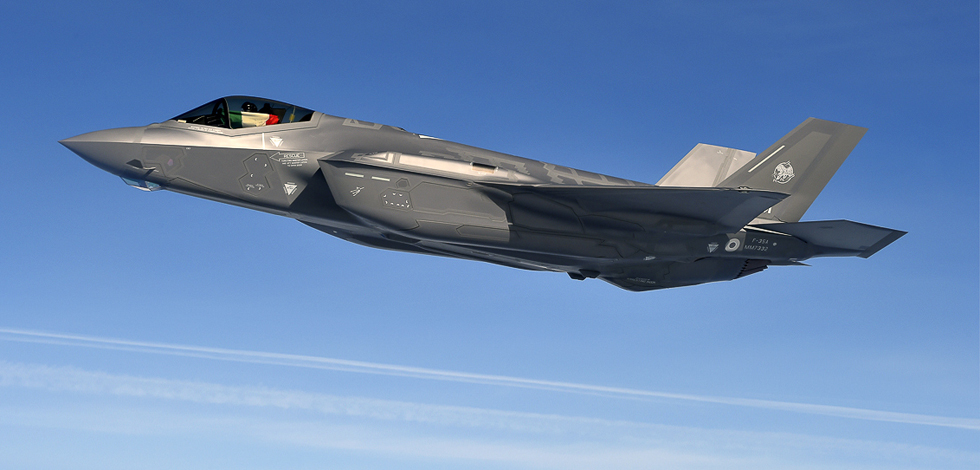

L'Aeronautica Militare avendo essendo destinata allo spazio aereo assicura la sorveglianza e difesa dello spazio aereo nazionale 365 giorni all'anno, 24 ore su 24, con un sistema di difesa integrato, e mezzi adeguati al lavoro da svolgere che sia dal combattimento, l'addestraento, il soccorso, la ricognizione o il trasporto
Tra le attività peculiari svolte dall’Aeronautica Militare un’importanza particolare è rivestita da tutte le attività di selezione, formazione e addestramento del personale proprio e di altre Forze Armate e/o Corpi Militari per ciò che concerne la navigazione aerea.
| Modello | Descrizione | Immagine |
|---|---|---|
| F-35 | Il velivolo F-35 è un sistema d’arma aeronautico di quinta generazione dotato di uno spettro di capacità operative tale da consentire lo svolgimento contemporaneo ed autonomo di tutte le missioni della dottrina aerotattica. |  |
| Eurofighter | L'Eurofighter è un caccia di ultima generazione, il più avanzato aereo da combattimento mai sviluppato in Europa, in grado di offrire capacità operative di ampio respiro e un’efficacia impareggiabile nel settore della Difesa Aerea. |  |
| Tornado IDS-IT ECR | Il Tornado (nomenclatura aeronautica A-200A) è un velivolo da combattimento bireattore, biposto, con ala a geometria variabile e capacità ognitempo, che l’Aeronautica Militare ha acquisito a partire dal 1982. |  |
| AMX E AMX-T | Ghibli è il “nickname” attribuito negli anni novanta all’AMX (nomenclatura aeronautica A-11B), un aereo monomotore da attacco e ricognizione, disponibile anche nella versione biposto da addestramento avanzato (AMX-T), frutto della collaborazione industriale tra Italia, con Alenia che detiene il 70,3% del programma, e Brasile, con Embraer che cura il rimanente 29,7%. L’AMX-T (nomenclatura aeronautica TA-11B) è soprattutto velivolo da addestramento e OCU (Operational Conversion Unit), ma ha anche capacità operative assimilabili a quelle del monoposto. |  |
La componente elicotteri dell’Aeronautica Militare è chiamata a effettuare una vasta gamma di operazioni.
Ha il compito di assicurare con efficacia il servizio di ricerca e soccorso aereo, sia per i compiti istituzionali di eventuale recupero di equipaggi e personale militare in difficoltà e sia per le attività di concorso alla collettività in caso di voli sanitari di urgenza, calamità naturali e grandi eventi nazionali.
| Modello | Descrizione | Immagine |
|---|---|---|
| HH.212 | Gli HH.212 permettono all'Aeronautica Militare di assicurare il servizio d i ricerca e soccorso sull’intera Penisola e acque territoriali. Grazie alla capacità d'impiego di giorno, di notte e in condizioni meteo critiche, con l'utilizzo di visori notturni NVG (Night Vision Goggles), gli HH.212 e i loro equipaggi rappresentano un punto fermo nelle missioni più complesse e di difficile gestione. |  |
| HH-101A | L'HH-101A, indicato con la denominazione "Caesar" nella versione dell'Aeronautica Militare, è un aeromobile di ultimissima generazione che espleta più ruoli tra i quali quello di Supporto Aereo alle Operazioni Speciali, quello di Slow Mover Interceptor (intercettazione di aeromobili lenti) nonché di Personnel Recovery, ossia del recupero di persone, civili e militari, in situazione di difficoltà in aree di crisi. |  |
| AW-139 | L'AW-139, che nella versione per l’Aeronautica Militare prende la denominazione HH, Hospital Helicopter, è un bi-turbina di categoria media. L’HH-139A è una soluzione individuata sul mercato per continuare ad assicurare con efficacia il servizio di ricerca e soccorso aereo, sia per i compiti istituzionali di eventuale recupero di equipaggi e personale militare in difficoltà, sia per le attività di concorso alla collettività in caso di voli sanitari di urgenza, calamità naturali e grandi eventi nazionali. |  |
| TH-500B | Presso il 72° Stormo di Frosinone i piloti neobrevettati destinati alla linea elicotteri conseguono l’abilitazione basica sull’TH 500B. Si tratta di un elicottero leggero, pentapala, monoturbina da addestramento e collegamento, caratterizzato da una elevata flessibilità d’impiego e versatilità che il 72° Stormo impiega dal 1990 anche per una delle sue attività più qualificanti. |  |